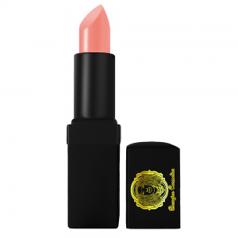

Ultra-high Molecular Weight Polyethylene Ropes Market Driven by Demand
Ultra-high Molecular Weight Polyethylene Ropes Market Driven by Demand
Increasing demand across industries for ultra-high molecular weight polyethylene rope is projected to fuel growth. The high cost, and availability of alternatives, could restrain market growth. Asia Pacific is projected to be the fastest growing region. Ultra-high molecular weight polyethylene is a subset of the thermoplastic polyethylene also known as high-modulus polyethylene (HMPE).It is odorless, nontoxic and tasteless and tough material used to make UHMWPE ropes.Ultra-high molecular weight polyethylene ropes provide a high level of security and protection for mooring of the tanker vessels.UHMWPE ropes are small in volume which makes them suitable for easy storage and easy handling.This rope does not allow chemical interaction and attack in marine and industrial application.Also, UHMWPE ropes have unique anti-microbial and moisture resistant properties, which makes it suitable for use in cables, sails and rigging in yachting and lifting slings.

Market Dynamics
Key factors such as increasing demand for the ultra-high molecular weight polyethylene rope in ports, marine, and aerospace industry across the globe are projected to fuel growth of global ultra-high molecular weight polyethylene ropes market over the forecast period.Ultra-high molecular weight polyethylene rope are used as a mooring ropes and yachting ropes in marine industry which gaining demand for the UHMWPE ropes.Moreover, growth in these industries is expected to have a positive impact on the growth of the market.For instance, according to U.S. Department of Commerce’s International Trade Administration, in China, aerospace industry was valued at $7.9 billion in 2016, which increased to $8.3 billion in 2017.Furthermore, owing to unique physical and chemical properties of ultra-high molecular weight polyethylene ropes such as high strength, corrosion resistance, wear resistance, flexible, light-weight, and high safety performance, it is gaining popularity in the aerospace industry. The availability of alternatives such as polyester and polypropylene and high cost of the UHMWPE rope are factors that could restrain growth of the global ultra-high molecular weight polyethylene ropes market.For instance, Naroc Rope Tech offers Bell Mix rope, which is a compound rope made from polyester yarn and high strength polypropylene yarn, in order to increase the strength of the rope.Therefore, easy availability of such substitute products is expected to negatively impact growth of the market. Market Outlook
On the basis of application, marine industry segment accounted for the largest market share in global ultra-high molecular weight polyethylene ropes market in 2016.Ultra-high molecular weight polyethylene rope can float in water also it has low stretch properties that provides greater sensitivity and easy handling.UHMWPE rope is widely used as a substitute of wire and steel rope in mooring line of tanker vessels, ship assist lines, and pennant lines for offshores rigs. On the basis of type, 12 stranded ultra-high molecular weight rope segment exhibited relatively high growth in the market in 2016 and is expected to witness the same trend during the forecast period.This is owing to its excellent vibration damping and low friction co-efficient, making it popular in shipbuilding, ocean transportation, and military defense industry.For instance Katradis Marine Ropes Ind.S.A. Company introduced new product NIKA-Siri X-12 ropes for application of mooring, ship to ship (STS) operation in 2017.NIKA-Siri X-12 are high module UHMWPE 12 strand ropes, which are cost effective and over-braided ropes.It aids in decreasing mooring towing operating times and also lowers labor requirement in various operations. Asia Pacific is projected to be the fastest growing region in the ultra-high molecular weight polyethylene ropes market over the forecast period.Rapid growth in aviation industry is expected to drive growth of the ultra-high molecular weight polyethylene market in emerging economies such as India and China.For instance, according to India Brand Equity Foundation (IBEF), India has become the world’s fastest growing domestic travel market recording a 26.6% year-on-year growth in January 2017, which has bolstered demand for aviation industry goods, which includes UHMWPE ropes. Key Players
Major players operating in the ultra-high molecular weight polyethylene rope market include Liros Gmbh, Dyneema, Thanawala Co, Cousin Trestec, Atlantic Braids Ltd, New England Ropes, Miami Cordage, Lankhorst, Katradis, Samson, Bridon, Ropesling, Southern Ropes, and others. Key players are strategically investing in research and development, in order to enhance their product portfolio.Furthermore, players are focusing on inorganic strategies For instance, WireCo World Group Inc., a company focused on producing and marketing of rope and cable, acquired Royal Lankhorst Euronete Group, to develop synthetic rope in 2012.Furthermore, Samson and The Manitowoc Company jointly launched Manitowoc’s Grove RT770E rough-terrain mobile crane, which features the first fully synthetic hoist rope designed specifically for mobile cranes, in March 2014. Share on Facebook Tweet Follow us
Posted On: 2019-04-10T00:00:00
Posted By: Aman Jain


Content Date: 2019-04-10
Download Date: 2021-07-10
Document ID: L0C04EYCU